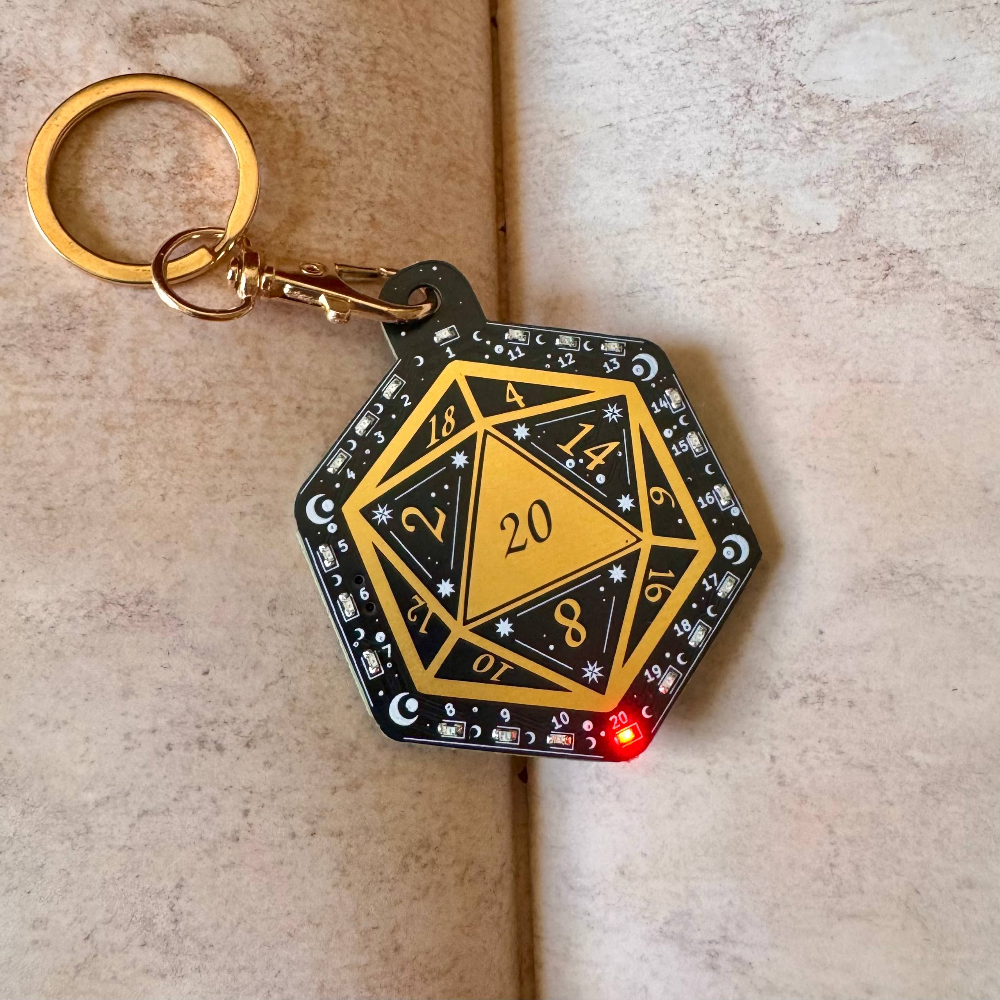
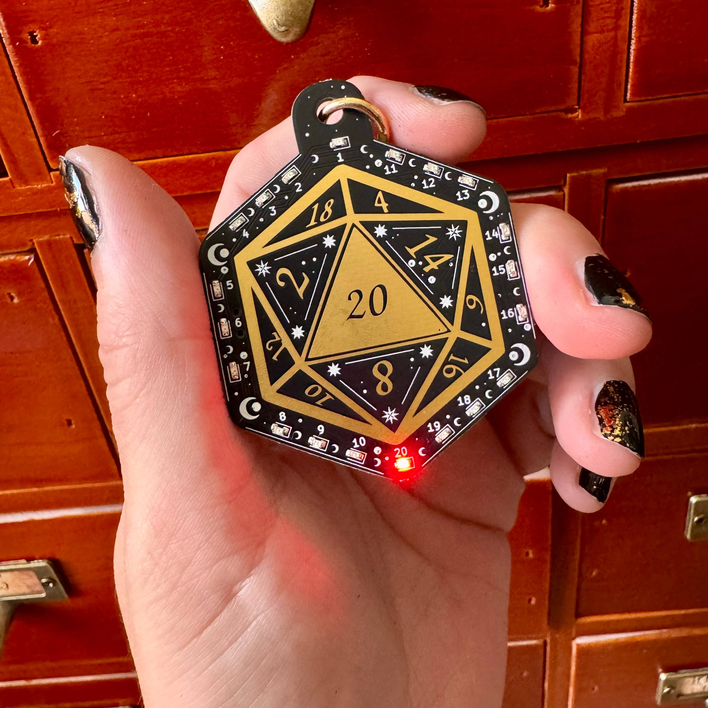
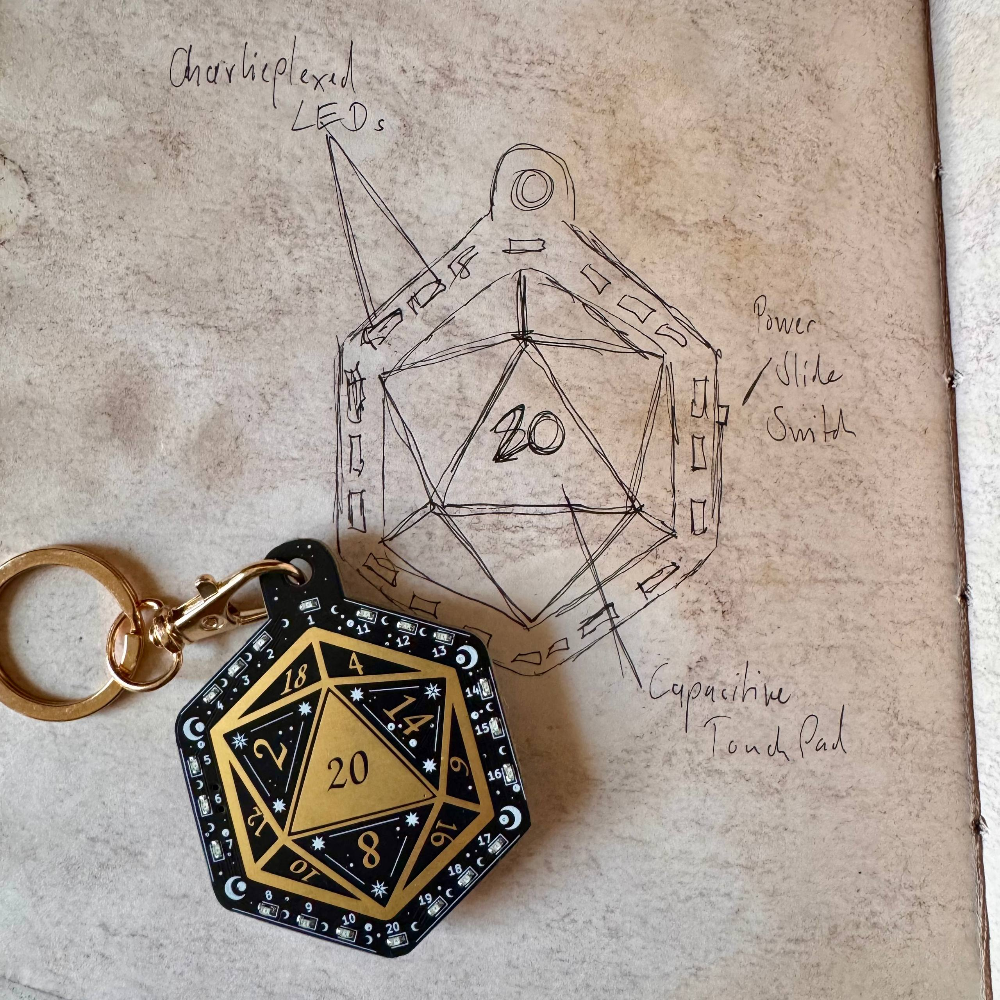
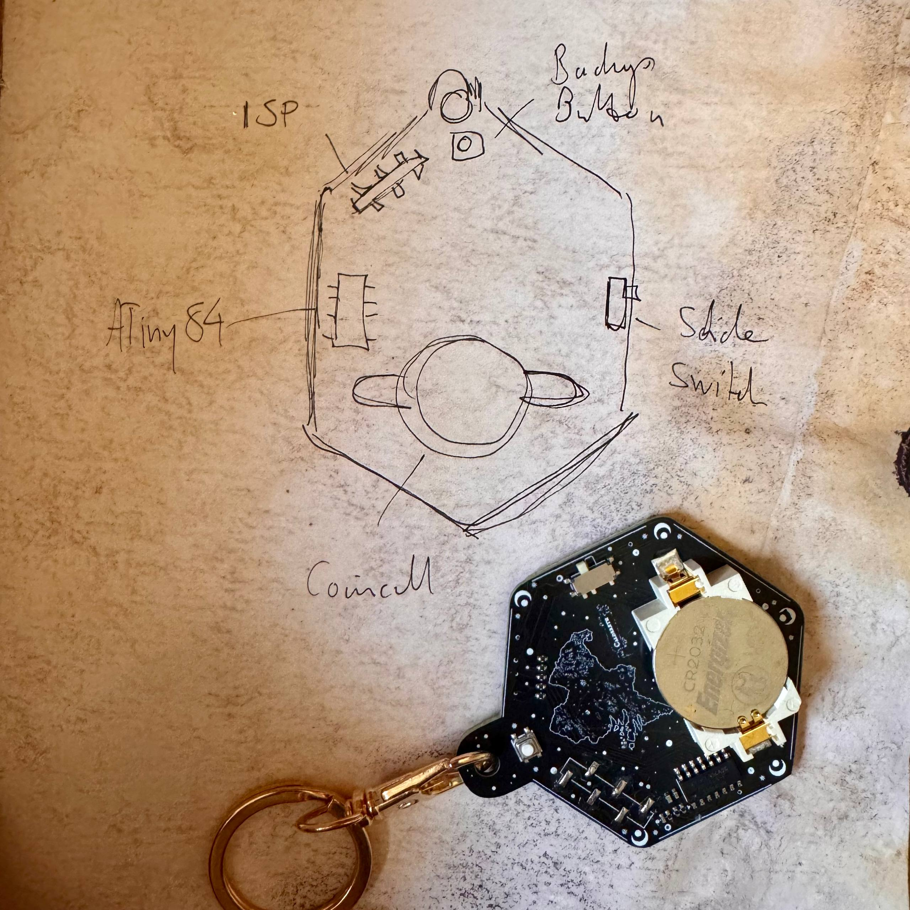

[TL;DR] I built a slightly judgemental d20 as a PCB. It lights up, remembers who attuned to it first, and slowly develops opinions about your dice luck.
Roll too many natural 1s and it might get annoyed. Roll enough 20s and it may start rooting for you.
It's an electronic dice with a tiny bit of personality:
because if we're already putting microcontrollers into everything, we might as well add a little drama.

"
title=""
width="650px">
<figcaption><span class="figure-number">Figure 1: </span><caption text></figcaption>
</figure>
<h2>Hardware With a Role to Play</h2><p>Some time ago I did what I do best: merge my DnD hyperfixation with one of my
other hyperfixations. This time the result wasn't yet another Emacs mode for
running pen-and-paper sessions, but something slightly more tangible: silicon.
</p>
<p>That's how the d20 PCB was born.
</p>
<p>While working on it I realised that hardware is actually a surprisingly good
medium for storytelling. Even something as simple as a dice can develop a bit
of character if you give it the right ingredients: a few rules, a bit of state,
some quirks in how it behaves. Not actual intelligence of course, but enough
to make the device feel like it has a personality.
</p>
<p>Originally the board was designed as a small gift for my DnD players (I’m the
DM of the group), so a lot of its behaviour is tied to the characters
around the table and their particular quirks. At first glance it's just a small
electronic d20. Under the hood, however, a few mechanics shape how it reacts to
rolls and players over time, giving the illusion that the dice itself develops
preferences and moods (and often also attitude).
</p>
<p>Even the artwork on the PCB ties into the lore of our campaign. From schematic
to layout to firmware, the entire project ended up revolving around one idea:
building hardware that isn't just a tool for the story, but quietly becomes a
part of it.
</p>
<h2>The Dice and Its Quirks</h2><p>At its core the board does exactly what a dice is supposed to do: it rolls a
random number. Touch the pad (or press a button), it spins through the LEDs for
a moment, and then one of the twenty numbers lights up. Simple.
</p>
<p>But after a while (i.e. quickly) the dice starts behaving a little… loaded.
</p>
<p>The first player who uses it <strong>attunes</strong> the device. In pen-and-paper terms that
means the dice bonds to a character. From that moment on it remembers who first
claimed it and adjusts some of its behaviour accordingly.
</p>
<p>It also keeps track of what happens at the table. Roll enough natural 1s and
the dice may start getting a bit cranky about it. Roll enough natural 20s and
it might become a little too enthusiastic instead. Over time the firmware
quietly biases the rolls in response, nudging the results ever so slightly in
one direction or the other.
</p>
<p>If you really manage to upset it, the dice may even start acting out in more
subtle ways: LEDs flicker a little differently, animations become slightly less
reliable, and things generally feel a bit… temperamental.
</p>
<p>There are also a few small animations triggered by special rolls, inspired by
the characters in the party. And because no microcontroller project should ever
ship without secrets, the firmware contains more than one easter egg waiting to
be discovered.
</p>
<p>So while the board looks like a simple electronic d20, it slowly reveals a few
quirks the longer you play with it. Just enough to make the dice feel like it
has a personality of its own (and only secondarily motivated by my urge to say
“it's a feature, not a bug.”).
</p>
<figure>
<p></p>"
title="<title text>"
width="650px">
<figcaption><span class="figure-number">Figure 1: </span><caption text></figcaption>
</figure>
<h2>Designing a Dice With Character</h2><p>At some point during development it became clear that thinking about the board
in terms of features was the wrong approach.
</p>
<p>Instead of a feature list, the dice needed something closer to a character
sheet.
</p>
<p>Once you look at it that way, the design space changes. Tracking natural 1s
and 20s stops being simple bookkeeping and starts looking more like mood.
A tiny bias in the RNG becomes attitude. Slightly unreliable LEDs can read
less like a bug and more like the dice expressing its displeasure.
</p>
<p>That’s the fun part about hardware as a storytelling medium. Unlike software,
a physical object sits at the table with the players. It can react, remember,
misbehave a little, and slowly reveal its quirks over time. Even a tiny
microcontroller suddenly feels less like a tool and more like a prop that is
part of the game.
</p>
<p>Of course none of this happens by magic. Behind the scenes it’s still just a
small microcontroller, a handful of LEDs, and some very opinionated firmware.
</p>
<p>So let’s take a look under the hood.
</p>
<figure style="text-align:center;">
<div style="display:flex; justify-content:center; gap:20px;">
<p></p>"
title="<title text 1>"
width="300">
<p></p>"
title="<title text 2>"
width="300">
</div>
<figcaption>
<span class="figure-number">Figure 1: </span><caption text>
</figcaption>
</figure>
<h2>Under the Hood</h2><p>Under the surface the dice is actually a teeny-tiny embedded system.
</p>
<p>The board is built around an ATtiny84 microcontroller driving twenty LEDs
arranged around the edges of a (roughly) d20-shaped PCB. To keep the board small the
LEDs are charlieplexed, allowing all twenty to be driven using only a handful
of GPIO pins. On a small microcontroller like the ATtiny84 that pin budget
matters quite a bit, because, well, dedicating one pin per LED simply would not fit.
</p>
<p>A capacitive touch pad acts as the primary “roll” input, with a small push
button as a backup trigger. Power comes from a coin cell battery and a slide
switch, and the board exposes a small ISP programming header so the firmware
can be flashed or updated.
</p>
<p>Everything sits on a PCB shaped like the outline of a twenty-sided
die, with the LED positions corresponding to the numbers around the edge and
the capacitive touch pad functioning as the 20.
</p>
<h3>Touch and Attunement</h3><p>The touch pad does more than simply trigger a roll. The raw capacitive
readings are also used to derive a small fingerprint during the first
interaction with the device.
</p>
<p>Capacitive sensing is inherently noisy and varies slightly depending on the
user, environment and even how the board is held. Instead of fighting that
variability the firmware takes advantage of it. During the first touch a set
of samples is taken and combined into a small value that becomes the device's
attunement state.
</p>
<p>This value is stored in EEPROM so it persists even if the battery is removed.
</p>
<p>From that point on the attunement value subtly influences various aspects of
the dice's behaviour: timing, animation pacing and certain sensing thresholds.
Two dice built from identical hardware can therefore still end up behaving
slightly differently depending on who first "attuned" them.
</p>
<h3>The Dice State</h3><p>While the dice is being used it keeps track of a few simple statistics.
</p>
<p>Most importantly it counts natural 1s and natural 20s rolled during a
session. These counters form a tiny internal state that roughly represents
how the dice “feels” about the current streak of luck.
</p>
<p>The firmware does not treat these counters as strict logic conditions.
Instead they behave more like weights that influence later decisions.
The state gradually drifts as the session/usage progresses, giving the dice a
small memory of recent events.
</p>
<h3>Biasing the Rolls</h3><p>Normally the roll result is derived from a uniform random distribution.
However once the dice accumulates enough natural 1s or natural 20s the
internal state begins to influence the result selection slightly.
</p>
<p>The underlying RNG remains uniform, but the final selection step can be
weighted just enough to make certain ranges of results marginally more
likely. The bias is intentionally small, the goal is not to deterministically
force outcomes, but to gently tilt the odds depending on the current state.
</p>
<p>From a purely statistical perspective this is just a small modification to
the selection stage of the random number generation. From a storytelling
perspective it starts to look suspiciously like the dice having a mood.
</p>
<h3>When the Dice Gets Upset</h3><p>If the internal counters drift too far in one direction the dice begins to
express its displeasure in other ways as well.
</p>
<p>Certain animations become more erratic, LED timing shifts slightly, and some
sensing thresholds are adjusted so the device feels a bit less predictable.
Because the LEDs are multiplexed through charlieplexing, even small timing
changes can subtly alter the visual behaviour of the display.
</p>
<p>None of this breaks the dice, but the overall behaviour becomes noticeably
more temperamental.
</p>
<p>In other words: the firmware starts leaning into the illusion that the dice
has an attitude.
</p>
<h3>Secrets in the Firmware</h3><p>Finally, like any respectable microcontroller project, the firmware also
contains a few hidden behaviours.
</p>
<p>Some are triggered by unlikely sequences of events, others require a bit
of curiosity to uncover. None of them are strictly necessary for rolling
dice, but they make the device a little more fun to explore.
</p>
<h2>Field Testing With Adventurers</h2><p>Of course the prototypes were immediately(-ish) deployed at the table.
</p>
<p>The dice were originally meant as a small Christmas gift for my players.
Naturally they received them instantly… around Easter.
</p>
<p>To my knowledge none of them are aware of the mechanics described in the
previous sections. As far as they know it’s just a small personalised electronic d20 that
lights up nicely when you roll it.
</p>
<p>Some things did raise eyebrows though. One player accused the dice of “not
being really random”. Another commented that it sometimes felt a bit buggy.
</p>
<p>So close.
</p>
<p>For now the dice does exactly what it was meant to do: give each player a
personalised little gadget for the table. And give the DM the quiet joy of
knowing a bit more about what’s going on inside.
</p>
<h2>If You Want to Build One Too</h2><p>Right now I’m in the process of cleaning up the KiCAD project and the
firmware before publishing anything.
</p>
<p>The versions used at our table are heavily personalised for the individual
player characters, and I’d like to keep those exactly as they are. Part of the
magic is that each player’s dice is just <strong>their</strong> dice, with its own quirks and
little secrets.
</p>
<p>So the public version is getting a bit of refactoring to remove the
campaign-specific parts while keeping the general mechanics intact.
</p>
<p>Once that’s done I’ll publish the board files, firmware and a more detailed
write-up on how the whole thing was built: from schematic to PCB to the
slightly opinionated firmware running on the dice.
</p>
<p>So if you'd like to build your own slightly dramatic d20, stay tuned.
</p>
<div id="postamble">Made with Emacs :)
<p><a href="disclaimer.html"> Disclaimer </a>
</p></div></div></div></div></body>
</html>